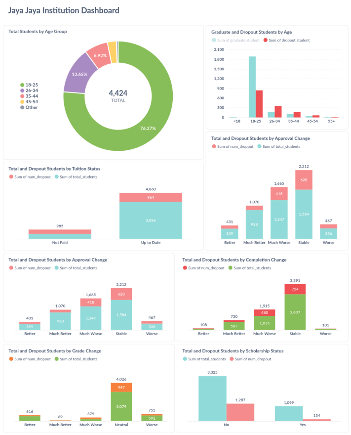
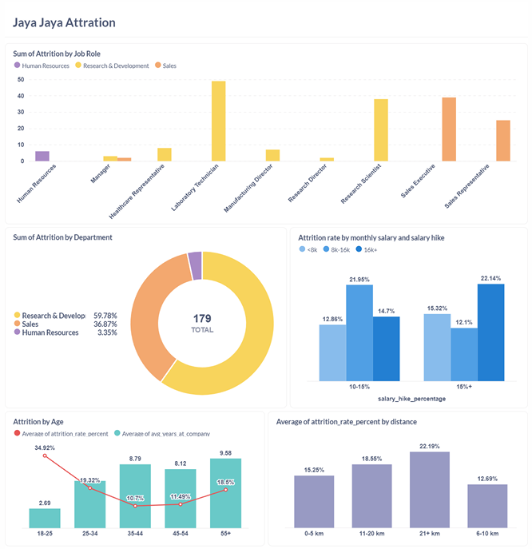
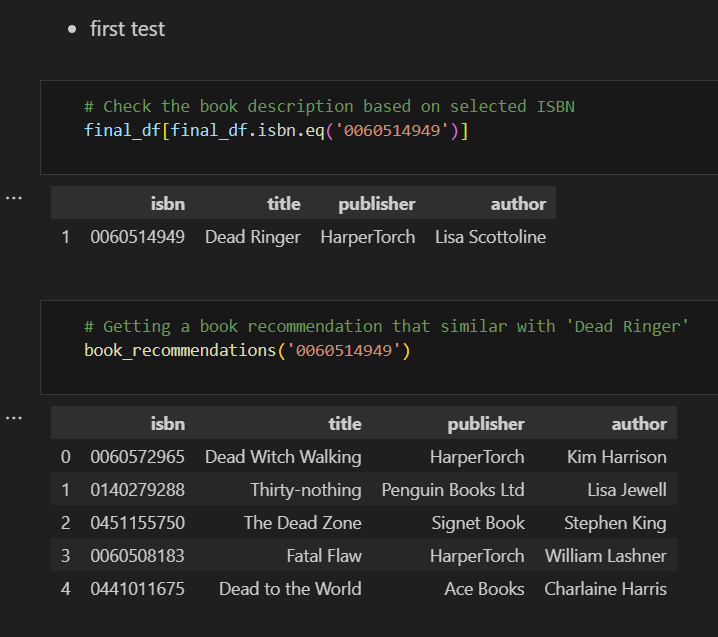
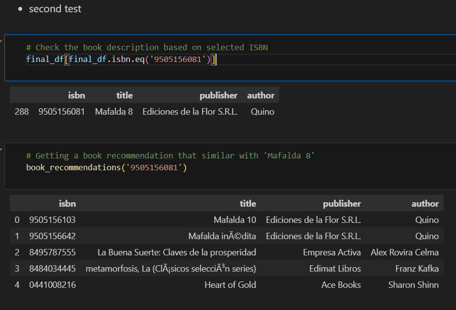
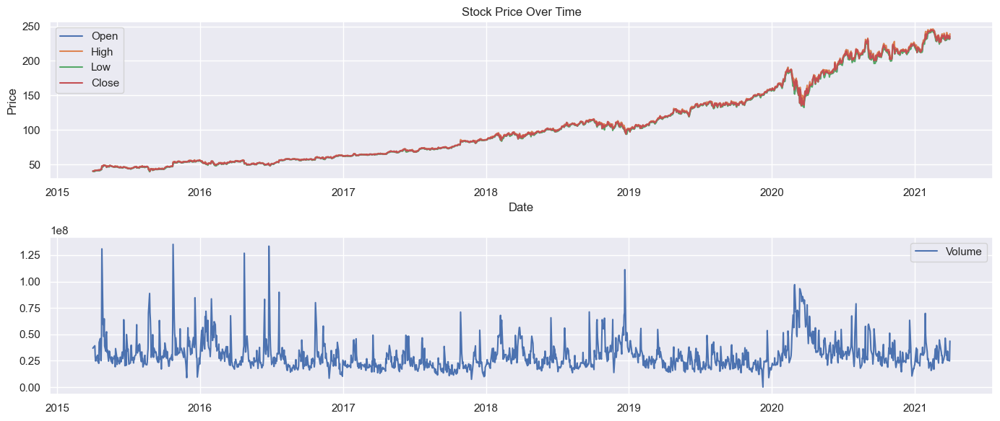
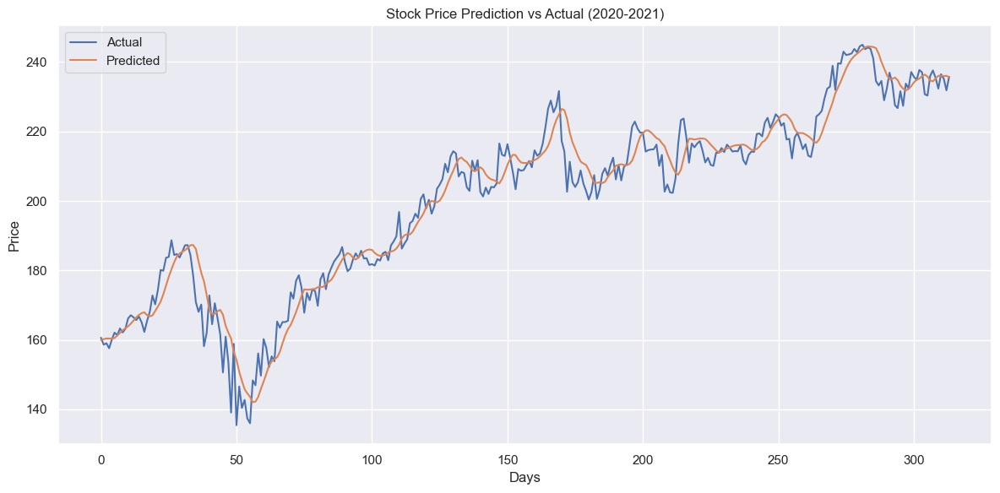
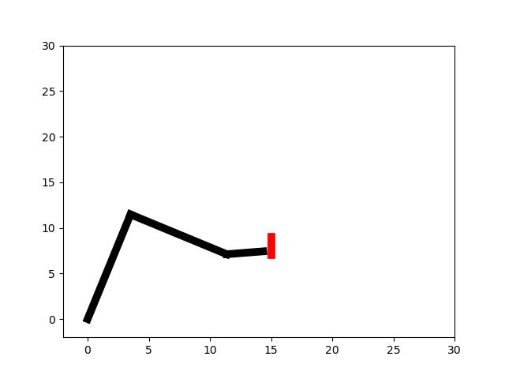
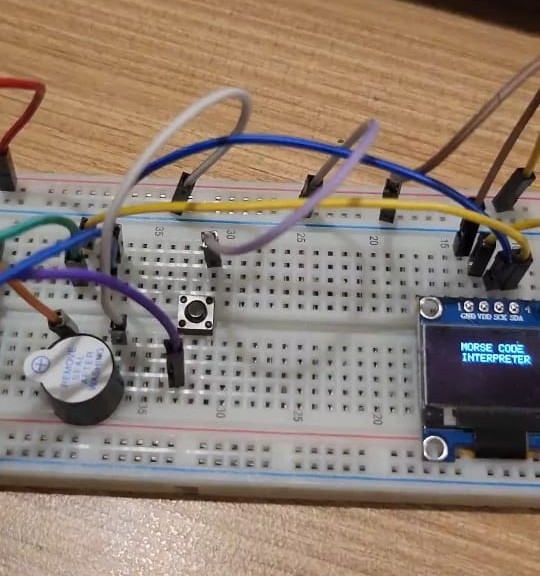

Projects
Dropout Rate Analysis

This project focuses on analyzing factors contributing to student dropout using exploratory data analysis and machine learning classification. By examining demographic, academic, and institutional variables, the project identifies key indicators and patterns that influence students' likelihood of dropping out.
Goal: Discover and understand the main factors affecting student dropout through data analysis and predictive modeling
Tools Used: Python, Pandas, scikit-learn, Docker, Metabase
Techniques: Data cleaning, feature engineering, correlation analysis, classification models (Random Forest)
Features: Visual dashboards highlighting important trends and model insights to assist institutions in early intervention strategies
Attrition Rate Analysis

This project analyzes employee attrition using statistical insights and machine learning to uncover key factors behind workforce turnover. By leveraging HR-related data such as job role, satisfaction level, salary, and working conditions, it helps organizations identify risk patterns and take proactive steps to improve retention.
Goal: Identify and analyze the main contributors to employee attrition for better workforce management
Tools Used: Python, Pandas, scikit-learn, Docker, Metabase
Techniques: Data preprocessing, exploratory data analysis, feature importance ranking, Random Forest classification
Features: Interactive Metabase dashboard presenting model results, attrition trends, and actionable insights to support HR decision-making
Book Recommendation System
 
This project presents a content-based book recommendation system that uses TF-IDF (Term Frequency-Inverse Document Frequency) to suggest similar books based on their descriptions. The system compares the text content of books to identify and recommend those with the highest similarity scores to a given input.
Goal: Recommend books with similar content using natural language processing
Tools Used: Python, Pandas, scikit-learn, NumPy
Algorithm: TF-IDF Vectorization + Cosine Similarity
Features: Input a book and view top recommendations based on textual similarity, interactive interface is not developed
Microsoft Stock Forecasting
 
This project focuses on forecasting Microsoft stock prices using a Long Short-Term Memory (LSTM) neural network. By training on historical stock data, the model learns temporal patterns and trends to predict future prices with improved accuracy. The project includes data preprocessing, model training, and performance evaluation using visual comparisons of predicted vs actual prices.
Goal: Build a time-series forecasting model to predict Microsoft stock prices based on historical data
Tools Used: Python, Pandas, NumPy, Matplotlib, TensorFlow/Keras
Algorithm: LSTM (Long Short-Term Memory) Neural Network
Evaluation: Line plots comparing actual and predicted prices, error metrics for model accuracy
E-commerce Data Analysis


This project features an interactive e-commerce data visualization dashboard built with Streamlit in Python. It provides insights into sales trends and customer geolocation data, helping businesses understand their market and optimize strategies.
Goal: Create an intuitive dashboard for visualizing and analyzing e-commerce sales and geolocation data
Tools Used: Python, Streamlit, Pandas, Matplotlib
Features: Interactive charts, maps for geospatial data, and dynamic filtering options to explore sales performance
Highlights: Real-time data interaction, user-friendly interface, and actionable business insights through visualization.
Deep Q-learning for Inverse Kinematics Problem

A reinforcement learning project simulating a 3 Degrees-of-Freedom (DOF) robotic arm that learns to reach a target position using Deep Q-Learning. The environment and robot movement are visualized using Matplotlib, offering an intuitive and lightweight simulation.
Goal: Train an agent to control a robotic arm to reach a target (x, y) position
Tools Used: Python, NumPy, Matplotlib
Algorithm: Deep Q-Learning (DQL)
Visualization: 2D animated plot of the robot arm and target location via Matplotlib.
Morse Code Interpreter

This project involves building a Morse code interpreter using an Arduino microcontroller that decodes Morse signals in real-time. The neural network responsible for interpreting the signals is trained on a computer using a custom-built neural network implemented from scratch in C++.
Goal: Develop an embedded system to translate Morse code signals into readable text
Tools Used: Arduino, C++ (custom neural network implementation), Serial communication
Training Environment: Neural network training is performed offline on a PC using a C++ program designed from scratch without external ML libraries
Deployment: Trained model parameters are uploaded to the Arduino to perform live Morse code decoding
Highlights: End-to-end system combining hardware and software development, custom neural network architecture tailored for signal pattern recognition, and real-time signal processing on a microcontroller platform.
Data Cleaning with SQL
Cleaned, transformed, and analyzed raw datasets using SQL to prepare reports and visual insights.
View on GitHub